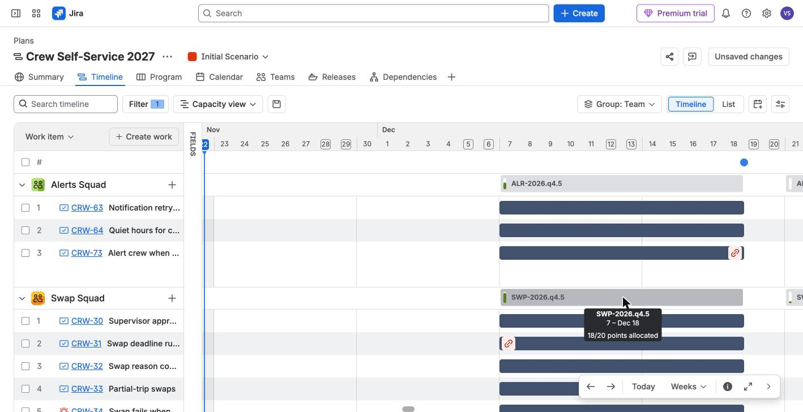
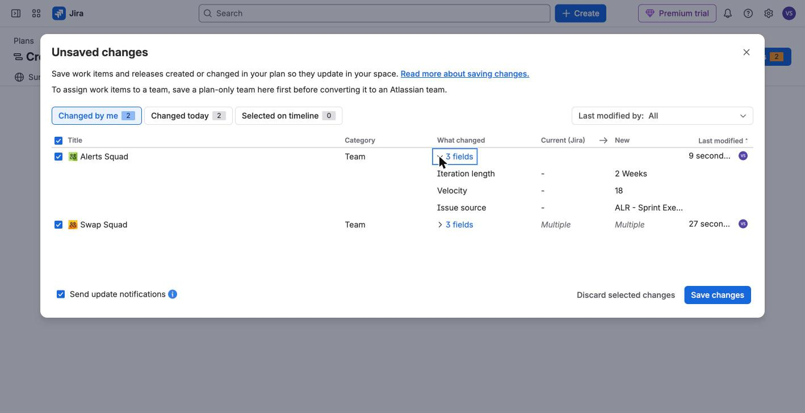
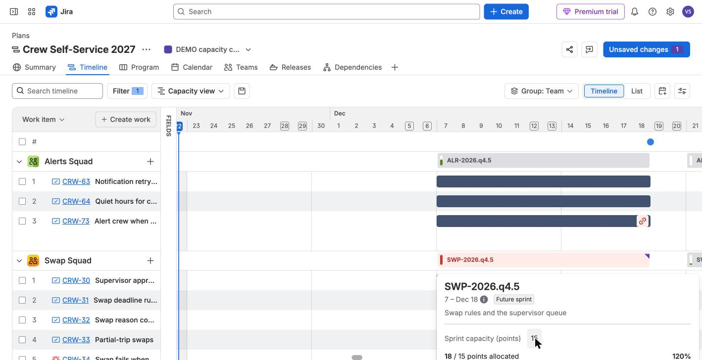
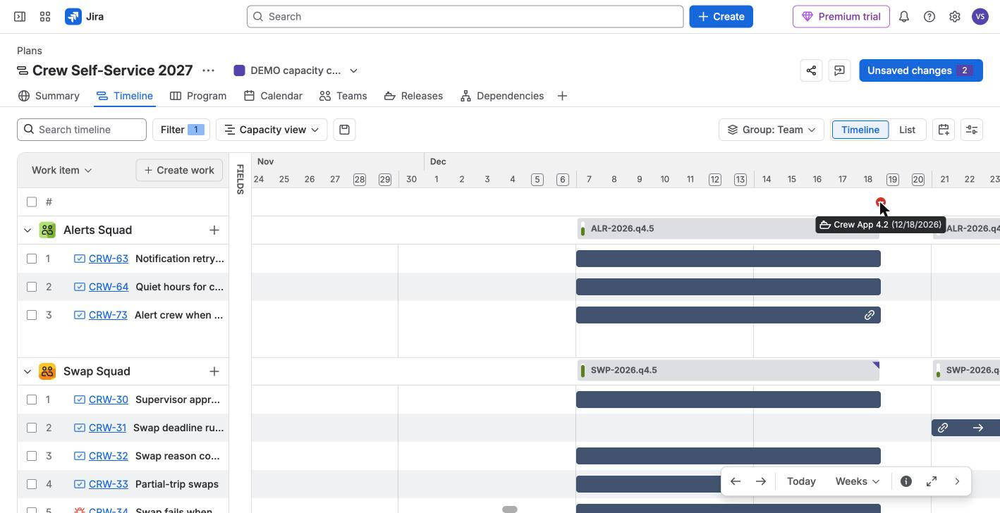
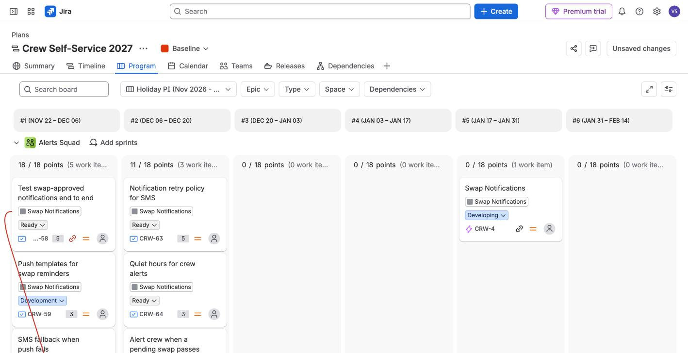

Module 2 of 8 · Session 1 · Connect outcomes to the forecast
Compare Plans scenarios across teams
Swap Squad just lost a quarter of its capacity. Find the option that keeps the release forecast honest, not the one that merely turns the capacity bar green.
55 min30 min practiceLab: Choose a realistic release forecast
Objective
Recommend a delivery scenario based on capacity, dependencies, releases and stated assumptions.
Plan sources
Hierarchy
Team setup
Capacity
Sprint assignments
Scheduled dates
Alternative scenarios
Dependency warnings
Cross-team release coordination
Unestimated work
Draft changes and Review changes
The situationIt's 22 November. Crew App 4.2 is due on 18 December. Swap Squad has just learned that two people will be out for most of SWP-2026.q4.5 (7–18 Dec), so its capacity for that sprint drops from 20 points to 15. The delivery lead wants a recommendation before the release review: what moves, who's affected and what date can we honestly promise? Plans makes it easy to make a red bar green. Your job is to notice what turns red somewhere else when you do.
M2.1 How the plan is built
Before you trust a plan's forecast, know what it's made of. Every number on the timeline traces back to a setting someone chose.
Setting
In "Crew Self-Service 2027"
Why it matters for the forecast
Sources
SWP - Sprint Execution board (60), ALR - Sprint Execution board (62), the CRW space
Work that isn't in a source isn't in the plan. Board sources also bring the teams' sprints.
Hierarchy
Initiative → Epic → Story level
The Initiative CRW-1 and its Epics roll up the stories' schedule.
Estimation
Story points
Capacity bars sum Story Points. Unestimated work adds zero.
Dates
Target start / Target end for Initiatives and Epics; sprint dates for stories
A story in a sprint is scheduled for that sprint's dates. Move the sprint and you move the date.
Capacity is a planning input. Compare it with evidence: Swap Squad's average completed velocity is 18.33.
Scheduling
Scenarios on, auto-scheduler on
You can compare alternatives without touching Jira until someone saves.
Here's the Baseline for the sprint that's about to break. Each line is real CRW work:
Sprint
Work (points · release)
Load
SWP-2026.q4.5 7–18 Dec · "Swap rules and the supervisor queue"
CRW-30 Supervisor approval queue (8 · Crew App 4.3) CRW-31 Swap deadline rule (5 · Crew App 4.2 · blocks CRW-73) CRW-32 Swap reason codes (5 · Crew App 4.2) CRW-33 Partial-trip swaps (no estimate) CRW-34 Bug: swap fails when the trip crosses midnight UTC (no estimate · High · Crew App 4.2)
18 / 20
SWP-2026.q4.6 21 Dec – 1 Jan · "Holiday hardening"
CRW-36 Swap reminder before the deadline (3) CRW-35 Export swap history to CSV (no estimate)
3 / 20
ALR-2026.q4.5 7–18 Dec · "Reliable delivery"
CRW-63 Notification retry policy for SMS (5) CRW-64 Quiet hours for crew alerts (3) CRW-73 Alert crew when a pending swap passes its deadline (3 · is blocked by CRW-31)
11 / 18
ALR-2026.q4.6 next Alerts sprint
Empty
0 / 18
…atlassian.net/jira/plans/1/scenarios/1/timeline

Capacity view, grouped by team, before any change. Hover the sprint bar to see "18/20 points allocated". Notice the red link icons on CRW-31 and CRW-73: the two items depend on each other and are scheduled in the same two weeks.
18/20 is not the whole storyCRW-33 and CRW-34 add nothing to the bar because they have no estimate. CRW-34 is a High-priority Bug on the Crew App 4.2 release. The real load of q4.5 is "18 points plus two unknowns, one of them urgent". A forecast that doesn't say that is overconfident before you've changed anything.
…atlassian.net/jira/plans/1/scenarios/1/teams

Team setup is a draft change too. When the plan's teams were configured, Review changes listed each team's iteration length, velocity (18 for Alerts Squad) and issue source before anything was saved.
M2.2 Scenarios and draft changes
A scenario is a named, alternative version of the plan. The plan has two today: Baseline (scenario 1, the plan as it matches Jira) and DEMO capacity cut (SWP 15) (scenario 3, the instructor's demo, never saved). Changes you make in a scenario are draft changes. They live in the plan and change nothing in Jira until someone opens Review changes and presses Save changes.
What a draft change can be
A work item moved to another sprint (its Sprint field)
A sprint's capacity ("Sprint velocity 20 → 15")
Dates, estimates, teams, releases, new work
What Save does
Writes the selected work-item changes to Jira
Changes boards, sprints and reports everyone else sees
Can notify watchers (the "Send update notifications" box)
The Review changes dialog after the demo: exactly two draft changes, each showing Current (Jira) → New. In this course you read this list, then press Discard selected changes. You never press Save changes.
Shared plan, personal scenarioTwenty people share one plan. Each learner or pair works only in a scenario of their own, named Lab {SEAT}. If anyone presses Save, CRW items move in Jira for everyone, and the verified answers in this course stop being true. The instructor deletes lab scenarios after class.
The outline says "save only the designated sandbox update if the exercise role permits it". On this training site no update is designated, because the plan's sources are the read-only CRW space. Your output is the comparison and the recommendation, not a saved change. In your own team's plan, the person who owns the plan reviews the list and saves the selected rows.
M2.3 Reading the warnings: capacity, dependencies, releases
Capacity: the red bar everyone sees
Set SWP-2026.q4.5's sprint capacity to 15 and the sprint bar turns red: 18 / 15 points allocated, 120%. That's the warning everyone reacts to, and the one that's easiest to "fix" badly.
…atlassian.net/jira/plans/1/scenarios/3/timeline

The sprint panel in the demo scenario. The capacity field is editable right here. Notice "Unsaved changes 1" in the top right: the capacity cut is already a draft change.
Releases: the marker that turns red somewhere else
The obvious fix is to move 5 points out. Move CRW-31 to SWP-2026.q4.6 and q4.5 drops to 13/15. It fits. But CRW-31 is on Crew App 4.2, and q4.6 starts on 21 December, three days after the release. The release marker for 18 December turns red.
…atlassian.net/jira/plans/1/scenarios/3/timeline

After the move: CRW-31's bar sits in the next sprint (right edge) and the Crew App 4.2 marker on 18 Dec is red. The capacity bar is green now, but the release promise is broken.
Dependencies: the team that isn't in the room
CRW-31 blocks CRW-73, the Alerts Squad story "Alert crew when a pending swap passes its deadline". You can't alert on a deadline rule that doesn't exist yet. Open the Dependencies tab after the move:
Read the dates on each card. CRW-31 now runs 21 Dec – 1 Jan, while the work that needs it (CRW-73) is scheduled 7–18 Dec. That's −25d: the dependent work finishes before its blocker starts. CRW-22 → CRW-58 (−13d) was already a problem in the Baseline.
A negative number means the blocked item is scheduled before its blocker is done. The size of the number tells you how far apart they are. Three dependencies are worth knowing in this plan:
CRW-31 blocks CRW-73: created by Option A. Alerts Squad would build an alert for a rule that ships 25 days later.
CRW-22 blocks CRW-58 (−13d): already in the Baseline. The eligibility engine (in eQE Testing) and the end-to-end notification test that needs it are in the same sprint window. The plan setting that allows dependent work in the same iteration is off, so Plans flags it.
CRW-3 blocks CRW-4 (−2m): Epic-level overlap between Shift Swap Self-Service and Swap Notifications.
The receiving team's view
Alerts Squad's capacity matters as much as Swap Squad's whenever an option pushes work onto them. The Program board shows every team's load per increment on one screen.
…atlassian.net/jira/plans/1/scenarios/1/program/1

Program board "Holiday PI" in the Baseline. Alerts Squad is full in the current increment (18/18, including CRW-58, which is blocked) and has room in the next (11/18). Any option that hands Alerts Squad more work must be checked here and agreed with that team.
One more hidden loadThe active sprint SWP-2026.q4.4 carries 18 points. CRW-25 (5 points) is flagged and blocked by Impediment CRW-46, whose credentials were needed by 25 November. If CRW-25 carries over, it lands in q4.5 too. A good recommendation names that as an assumption.
M2.4 Three options, one decision
The outline asks you to compare shifting scope with changing the handoff. Treat them as three real options, each with a cost, plus one you may find yourself:
A · Shift scope
Move CRW-31 to SWP-2026.q4.6. Swap Squad fits (13/15). Crew App 4.2 turns red, and Alerts Squad's CRW-73 is now scheduled 25 days before the rule it needs. Verified in the demo.
B · Change the handoff
Move CRW-31 to q4.6 and agree with Alerts Squad to take CRW-73 in ALR-2026.q4.6. The dependency order improves, but Alerts must agree, the deadline alert ships later, and CRW-31 still misses 4.2 unless the Product Owner retargets it.
C · Hold scope, accept risk
Change nothing but capacity. On paper 4.2 is intact. In practice q4.5 is at 120% with two unestimated items. History says about 15 points land, so something slips. You just don't get to choose what.
Before you pick, look at the release field of each item in q4.5. Not every item in the sprint is on Crew App 4.2. Moving the right item can protect both the release and the handoff, at a different cost. The comparer lets you test that.
Arithmetic versus observationSprint loads are sums, so you can predict them. Dependency lags and release markers are calculated by Plans from the schedule, so you observe them. The comparer below labels each result: Verified means it was observed on the site during the build (Baseline, the capacity cut, Option A). Arithmetic means you must confirm it in your own scenario before you put it in a recommendation.
Scenario comparer: Swap Squad at reduced capacity
Interactive
Everything here is a model of the plan for comparison. Make the real changes only in your Lab {SEAT} scenario, and discard them at the end.
Side by side
Option
SWP q4.5
SWP q4.6
ALR q4.5
ALR q4.6
CRW-31 → CRW-73
Crew App 4.2 (18 Dec)
The table assumes capacity 15 for Options A–D, as in the exercise input. "Your own option" row shows whatever you've ticked.
Instructor demo · 15 min
Open Crew Self-Service 2027 ↗ in the Baseline. Show Sources, Teams (Swap Squad 20, Alerts Squad 18), Capacity view, Group: Team. Hover SWP-2026.q4.5: 18/20. Point at CRW-33 and CRW-34 with no estimate.
Switch to the scenario DEMO capacity cut (SWP 15). (In a fresh rehearsal, create it as a copy of Baseline first, and say out loud that you're doing it in a copy.)
Click the SWP-2026.q4.5 sprint bar and set Sprint capacity to 15. Show "18 / 15 points allocated, 120%" and "Unsaved changes 1".
Inspect the dependent test activity: open Dependencies and show CRW-22 blocks CRW-58 (−13d). The notification test is in the same sprint as the eligibility engine it needs. That's already a risk before anything moves.
Shift scope: move CRW-31 to SWP-2026.q4.6. Show q4.5 at 13/15, then the red Crew App 4.2 marker, then CRW-31 blocks CRW-73 (−25d) in Dependencies.
Change the handoff: open the Program board ↗. Show Alerts Squad's 18/18 and 11/18 and ask: "What would we have to ask Alerts Squad to accept?" Move CRW-73 to ALR-2026.q4.6, let the room read the result, then move it back.
Open Review changes. Read the two rows aloud (CRW-31 Sprint q4.5 → q4.6; SWP-2026.q4.5 Sprint velocity 20 → 15). Select all and press Discard selected changes. Show the counter is gone.
LAB M2 · 30 MIN · CRW READ-ONLY · YOUR SCENARIO LAB {SEAT}
Choose a realistic release forecast
Turbulence
Brief Swap Squad's capacity for SWP-2026.q4.5 drops from 20 to 15. Build two options in Plans, check both teams' load, the dependency order and the Crew App 4.2 date for each, and recommend one with its assumptions. CRW is read-only and the plan is shared. Work only in your own scenario Lab {SEAT} (one per pair), and never press Save changes. You'll discard everything at the end. No other Jira writes are part of this lab.
Read the Baseline first. Open the plan ↗ in the Baseline scenario, switch to Capacity view and Group: Team. Confirm SWP-2026.q4.5 shows 18/20 and ALR-2026.q4.5 shows 11/18. Note which q4.5 items have no estimate and which release each item is on (Fields panel: Fix versions).
Create your scenario. Open the scenario menu next to the plan name, choose to create a scenario, copy it from Baseline and name it Lab {SEAT}. Check the name in the header before you change anything. If you're working in a pair, only one of you creates it.
Apply the input. Click the SWP-2026.q4.5 sprint bar and set Sprint capacity to 15. Confirm you see 18 / 15 and 120%. This is your "Option C" view, so record it.
Build Option A (shift scope). Set CRW-31's Sprint to SWP-2026.q4.6. Record: q4.5 and q4.6 loads, the Crew App 4.2 marker colour, and the CRW-31 → CRW-73 entry in Dependencies (date ranges and lag). Open the Program board ↗ (switch it to your scenario) and record Alerts Squad's load.
Reset, then build Option B. Open Review changes, tick only the CRW-31 row and press Discard selected changes, which keeps the capacity cut. Now build your second option. Either change the handoff (CRW-31 to q4.6 and CRW-73 to ALR-2026.q4.6) or move a different item whose release isn't 4.2. Record the same four facts. Note anything that differs from what the comparer predicted.
Check both teams. For each option, write down both teams' sprint load, the dependency order (blocker finishes before, with, or after the dependent work) and whether Crew App 4.2's date holds. Add the unestimated items and the CRW-25 carry-over risk as assumptions.
Recommend and clean up. Choose an option and state its assumptions and who must agree. Then open Review changes, read the list (it should match the moves you made plus the capacity change), select all and press Discard selected changes. Confirm "Unsaved changes" shows no count. Do not press Save changes.
project = CRW AND key = CRW-31 AND sprint = "SWP-2026.q4.5"
project = CRW AND updated >= -1h ORDER BY updated DESC
Debrief: what a strong answer looks like
Option C (hold, 15 capacity): SWP q4.5 18/15 (120%) plus two unestimated items, one of them High Bug CRW-34 on 4.2. Swap Squad averages 18.33 completed at capacity 20, so at 15 plan for roughly 15 points to land: at least 3 points slip, chosen by accident rather than by decision. The 4.2 date looks green but isn't credible.
Option A (move CRW-31): SWP q4.5 13/15, q4.6 8/20. Crew App 4.2 marker turns red. CRW-31 blocks CRW-73 at −25d: Alerts Squad would build the deadline alert in 7–18 Dec for a rule scheduled 21 Dec – 1 Jan. Verified on the site.
Option B (change the handoff): SWP q4.5 13/15; ALR q4.5 8/18; ALR q4.6 3/18. The alert follows the rule, but both sit in the next sprint window, so expect Plans to keep flagging a same-iteration dependency unless the two teams sequence it inside the sprint. Crew App 4.2 stays red for CRW-31 unless the Product Owner agrees to retarget the deadline rule. It costs a conversation with Alerts Squad and a later deadline alert.
The option many strong pairs find: move CRW-30 (8 points, Crew App 4.3, due 26 Feb) instead. By arithmetic, q4.5 becomes 10/15, leaving room to estimate and fix CRW-34. CRW-31 and CRW-32 stay on track for 4.2, and the CRW-31 → CRW-73 handoff is untouched. The costs are real: the sprint goal "Swap rules and the supervisor queue" loses the queue, Epic CRW-6 has less slack before 4.3, and "Holiday hardening" (q4.6) grows to 11 points over the holidays. Confirm all of that in your scenario before recommending it.
A recommendation that holds up names the option, the numbers you observed, the assumptions (capacity 15 is accurate; CRW-34 fits the remaining room once estimated; CRW-25 doesn't carry over, or its effect if it does; CRW-22 → CRW-58 at −13d is managed separately) and who must agree (Product Owner for release scope, Alerts Squad for any handoff change). Review changes should have listed exactly your moves plus "SWP-2026.q4.5 Sprint velocity 20 → 15", and you discarded all of them.
Learner output · Module 2
Two scenario views and a recommendation tied to capacity, dependency order and the release target. Use the comparer's "Send" buttons, then correct the text with what your scenario actually showed.
+600 mi
Checkpoint
1. With q4.5 capacity at 15, you move CRW-31 to SWP-2026.q4.6 and the bar turns green at 13/15. What else did the plan show?
CRW-31 is on Crew App 4.2 (18 Dec) and now lands after it. It also blocks CRW-73, which stays scheduled 7–18 Dec, 25 days before the rule it needs. Plans doesn't move other teams' work for you, and nothing reaches Jira until someone saves.
2. Why is "18/20 points allocated" an underestimate of SWP-2026.q4.5's load?
Capacity bars sum Story Points. Unestimated work counts as zero, so the bar looks lighter than the sprint really is. Say so in the forecast.
3. You've finished comparing options in your Lab {SEAT} scenario. What do you do in Review changes?
The plan's sources are the shared, read-only CRW space. Saving would move real items or change sprint capacity for everyone. Your scenario is visible in the plan without saving, and the instructor deletes lab scenarios after class.
4. Option B hands CRW-73 to ALR-2026.q4.6. Which check is essential before you recommend it?
Changing a handoff spends the receiving team's capacity and changes their commitments. Check their sprint load, get their agreement, and observe what Plans says about the dependency order. Don't assume it.
5. CRW-22 blocks CRW-58 shows −13d even in the Baseline, with both scheduled 22 Nov – 4 Dec. What does that mean?
A negative lag means the dependent item is scheduled before its blocker finishes. Here they share dates, and the plan setting for same-iteration dependencies is off. It's a real risk: the test can't finish until the engine passes eQE Testing.